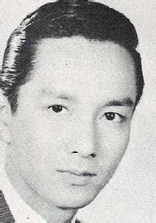

雷震
[公元1902年－1937年]
 雷震（1902－1937），原名雷汝勤，今四川省蒲江县成佳镇里仁村人。少时，先后就读邛大蒲联立中学、成都法政学校、熊克武建武学校。1924年8月，考入黄埔军校第二期炮兵科。1925年9月毕业，留校任军校第三期军械处中尉-表。学习期间，他参加第一次东征、镇压滇桂军杨刘叛乱、第二次东征。
1926年7月，广州国民政府誓师北伐，雷震被派任北伐军司令部副官。旋即被任命为国民革命军第四军第十师第二十八团蔡廷锴部之连长、营长，赴湖南作战，参加了平江之役和武汉三镇之役。收复武汉后，第二十八团编为第四军混成师一部，奔南浔路驰援江西北伐军，与敌激战马回岭、德安一线。
1927年11月，雷震奉调担任国民革命军第一军教导团李仙洲部之副团长，选为教导团组织团党部执行委员，后历任军部参谋处第三科中校科长、第一军教导团第三营营长、第一军第一师师部参谋、第一军第一师第五团副团长、第一兵站总监、第一军炮团第三营营长、上海交通大学军事训练教官。
1932年，雷震任第十九路军蔡廷锴部上校团长，参加“一·二八”淞沪抗战，率部在闸北与日寇激战月余，杀敌甚众。1933年福建事变后被解职，闲居杭州。1935年，出任中央军第七十八师桂永清部第四六八团副团长、团长。1936年，第七十八师并入中央军校教导总队，雷震被任命为教导总队第二团第一营营长。
1937年七七事变，抗日战争全面爆发。8月13日，日军进攻上海，淞沪会战开始。8月19日，雷震所在的中央军校教导总队第二团奉统帅部令，开赴乌龙山要塞布防。经4个小时急行军到达要塞，突接总队部急令：6点钟前赶到龙潭火车站，乘列车到上海，听候张治中将军指挥。火车经奔牛镇、浒墅关，到达昆山县，一路遭敌机侦查、扫射、轰炸。20日，为避免敌机的骚扰，部队趁夜晚急行军开赴前线。21日拂晓，第二团抵达上海江湾新建市政府，隐蔽待命。此际，日寇海陆空军配合，在江湾地区多次强行登陆，战况非常惨烈，防守该地区的第十八军损失惨重。22日，第二团奉张治中将军令，“于张家浜、殷家浜、南徐家湾之线，迎击登陆敌人。”午后两点，停泊在黄浦江上的日寇海军舰艇，开始向第二团发动猛烈的炮击。全团官兵冒着日军炮火奋勇前进，冲过日军炮火-线，进入泗塘河畔；一营担任防守右翼，雷震部署：以第二连、第三连为第一线防御力量，以第一连为全营预备队。敌我双方步兵在江岸堤埂展开反复搏杀争夺。时任第一营第三连排长的刘庸诚回忆：“敌人军舰上各种火炮，空中的敌机和少数占领江岸桥头堡的步兵，密如暴雨一般的炮弹、机枪和步枪弹不断地向我们泼来，立即泥浆冲天，硝烟弥漫，有如黄昏。”在第二团顽强阻击下，日军久留米师团登陆的步兵，不敢蠢动。张华浜阻击战中，第二团官兵伤亡近半数。11月6日，中央军校教导总队进驻苏州河畔八字桥阵地，接替第七十一军第六十七师黄维部之防务，桂永清要求教导总队死守阵地。教导总队全军将士与敌连续血战四天。11日，金山卫被日军突破，教导总队奉命撤回南京。
1937年11月，中央军校教导总队扩编为三旅六团制，雷震升任第三旅上校副旅长。同年12月1日，日本大本营下达《大陆命第八号命令》：“华中方面军司令官须与海军协同，攻占敌国首都南京”，中国军队南京保卫战正式开始。教导总队本奉命直接撤到湖南，应南京卫戍司令长官唐生智请求，经蒋介石同意留守南京。
卫戍司令部给教导总队下达的作战命令是：以协同友军同守南京为目的，于工兵学校、西山、紫金山、岔路口、中山门、太平门附近地区，占领阵地，加强防御工事，阻击歼灭沿京杭公路来犯之敌。
12月7日晚上，日军便衣队穿第八十七师军衣，袭击教导总队骑兵团第一营阵地，占领汤山。总队部命令骑兵团青龙山一线极力阻敌前进，下令各队禁止第八十七师士兵经过阵地，以防敌人的偷袭。第一旅旅长周振强、第三旅旅长马威龙、工兵团团长杨厚灿联名向唐生智、桂永清建议：集中兵力由紫金山的岔路口地区出击，威胁敌人后方。唐桂二将军认为“现在消耗兵员太多，万一出击不成，守南京的兵力就更不够了。”没有同意。8日拂晓，日军大批敌机向紫金山阵地轰炸，炮兵集中火力向麒麟门前进阵地射击，先遣装甲部队突进到通济门外红毛山附近，步兵开始向教导总队阵地攻击。当日，麒麟门前进阵地失守。9日拂晓，日寇集中兵力，攻击紫金山老虎洞阵地，教导总队且战且退，撤至紫金山第二峰主阵地防守。10日拂晓，日军集中兵力，进攻紫金山第二峰、孝陵卫之西山主阵地。周振强回忆道：“教导总队在孝陵卫驻扎四年之久，地形熟悉，构筑的阵地也比较坚固，官兵工战，由10日至11日晚上，在第二峰和西山同敌人反复的争夺战中，我队虽伤亡很大，同时也杀伤敌人很多，阵地始终在我队手中。”12日下午3时，首都卫戍司令部颁布卫戍作战命特字第一号命令：教导总队自紫金山北麓、麒麟门、土桥镇、天王寺以南地区向敌突围，向昌化附近集结。唐生智给教导总队下达口头指示：“如不能全部突围，有轮渡时可过江，向滁州集结”。至夜，教导总队前线官兵没接到弃城撤退的命令，仍在紫金山、灵谷寺、陵园新村、西山孝陵卫、白骨坟一线与敌激战。晚10时，第八十八师防守的雨花台阵地失守，粤军邓龙光部撤出太平门，教导总队前线阵地官兵与总指挥部失去联系。部分官兵商议决定：第三旅同粤军邓龙光部一起突围；工兵团到下头煤炭港、燕子矶之间准备渡河器材，骑兵团占领煤炭港一线掩护撤退；第一旅第一团为后卫。晚12时，教导总队开始逐次由阵地撤退，留一部占领紫金山的天堡城为掩护阵地，其余部队向煤炭港、燕子矶之间方向撤退。刘庸诚回忆说：“紫金山上马威龙的两个团，由于接不到命令，仍在苦战中。”“很多部队开始突围或向下关撤时，固守紫金山的教导总队第三旅还在旅长马威龙率领下与日军死战。直到13日零点以后才开始撤退。”13日中午，敌舰突破乌龙山长江-线，控制下关江面。下午，第三旅副旅长雷震带军过江突围未果，决定于下关火车站掩护军民乘火车突围。他率连长雷天乙等官兵上火车最后一节车厢殿后，列车被日机空袭炸断，火车头拉着前面车厢开走。雷震下车指挥官兵抗击蜂拥而至之日军近卫师团，与敌血战，终阵亡殉国，时年35岁。
1938年6月8日，教导总队总队长桂永清呈请国民政府给恤褒奖。9月13日，国民政府军事委员会颁布命令追赠雷震为少将。11月，国民政府军事委员会抚恤委员会向雷震之父雷德森、母王氏、妻朱雅雲、妻刘云祯、子雷克明、女雷克兰、女雷煜煜，下达恤金给与令，发遗属一次抚恤金1500元，年抚金600元。1939年，蒲江文庙设抗日战争殉国烈士“忠烈祠”，以每年3月29日为祭祀忠烈之日期，雷震入祀。1986年11月25日，四川省人民政府追认雷震为革命烈士。卢沟桥中国人民抗日战争纪念馆里，雷震烈士的英名被永远镌刻在中华民族抵御外侮之历史丰碑。
从1932年“一·二八”淞沪抗战至1937年淞沪会战、南京保卫战，雷震将军始终冲锋在与日寇搏杀的最前线。他勇往直前，不惧生死，为民族之解放战斗到最后一刻，是当之无愧的中华民族抗日英雄。
雷震相关
第二批著名抗日英烈（中央陆军军官学校教导总队第3旅副旅长）